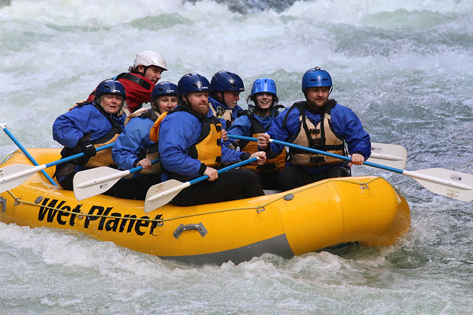

At Down The River Rafting, our mission is to deliver unforgettable river experiences powered by passion, safety, and the thrill of nature. Whether you're a first-time paddler or a seasoned rafter, our creed is simple: ride the waves, respect the river, and embrace the adventure. Flow with purpose, paddle with heart.


Down The River Rafting
History
Our rafting journey began in 2018 with a small group of friends who loved exploring rivers and the outdoors. What started as a hobby quickly grew into something more. We realized how much joy and adventure rafting could bring to others, so we decided to start a company. Since then, we’ve taken people from all walks of life on exciting river adventures. Whether it’s their first time or they’re experienced rafters, we make sure everyone has fun and stays safe. Today, we’re proud to offer guided tours that combine nature, excitement, and unforgettable memories.